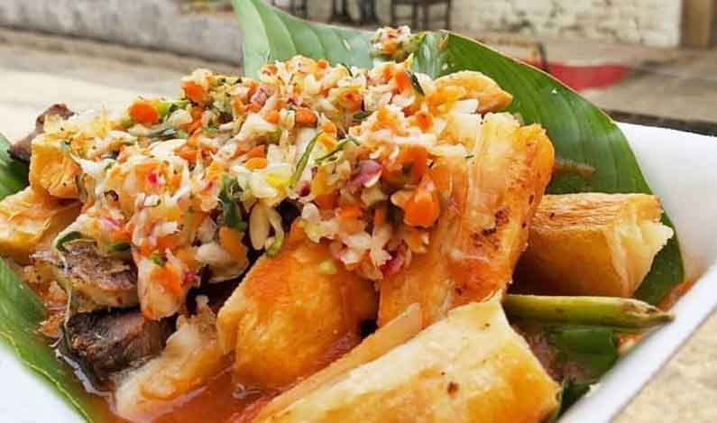
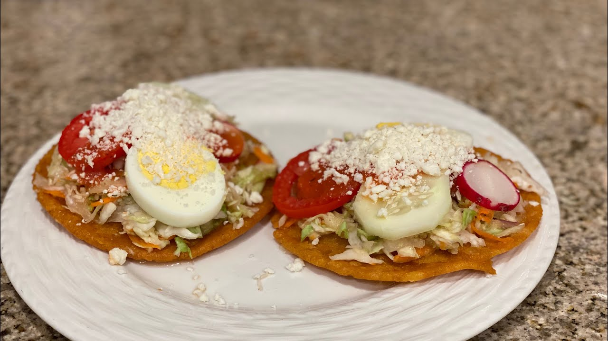

Nuestro país es un lugar mágico lleno de hermosos paisajes y ricas tradiciones.
Y uno
de sus atractivos es sin lugar a dudas su gastronomía. En esta página, encontrarás información
sobre las comidas típicas que caracterizan a
El Salvador. ¡Bienvenido!
Las Imperdibles Pupusas
Publicado por Christopher
Cruz
La pupusa es una tortilla gruesa a base de masa de maíz o de arroz rellena con uno o más
ingredientes, como queso, chicharrón, ayote, frijoles refritos, loroco, etc. Por su
tradición, versatilidad y bajo costo, es una de las comidas más difundidas en El
Salvador.
Las pupusas se han convertido en un símbolo de El Salvador. Por las calles de las
localidades salvadoreñas es común encontrar pupuserías, puntos de venta de pupusas, e
incluso pupusódromos.

Yuca Frita (y yuca salcochada)
Publicado por Christopher
Cruz
Es un plato típico de la gastronomía popular, aunque no se considera como un plato
principal y fuerte, es consumido como un entremés o bocadillo es muy común encontrar
lugares donde lo comercializan los principales son los comúnmente llamados mercados.
La yuca es una delicia de cualquiera de estas dos maneras de preparación y puede ir
acompañada de una infinidad de ingredientes, los cuales pueden ser: chicharrones,
pepescas, salsa de tomate, curtido, tomate, pepino; sólo se necesita creatividad para
combinar cualquier sabor con este delicioso platillo, ya que con la mayoría de los
ingredientes sabe muy bien. Así mismo también hay algo que la hace especias, cuando se
compra lista para comer se encuentra envuelta en una hoja de huerta, eso le da un sabor
especial y refrescante a este delicioso platillo.

Elotes locos
Publicado por María Torres
Una manera particular que tienen los salvadoreños para consumir el maíz, es cocinarlo
hasta que esté tierno, para luego bañarlos con salsa de tomate, mostaza y mayonesa, y
cubrirlos con queso rallado.
Son una de esas comidas típicas que indudablemente no pueden faltar en las ferias de los
pueblos y ciudades que se celebran en cada lugar de nuestro país en sus fiestas
patronales. Su exquisito sabor y los ingredientes con los cuales es preparado le dan ese
toque único que le encanta a los salvadoreños.
Papas fritas
Publicado por María Torres
Las papas fritas, son una merienda muy usual. Las papas se cortan en trozos delgados y se
ponen a freír, como las típicas papas que acompañan a las hamburguesas. La diferencia es
que las papas fritas de El Salvador son servidas en platos plásticos junto con otros
ingredientes como salsa dulce de tomate, mayonesa, queso rallado y sal. Además, se
acompañan de un palillo que sirve para sujetarlas y poder comerlas.
Son una de las comidas que abundan mucho, especialmente en celebraciones populares como
las fiestas patronales de los pueblos, de hecho, son infaltables en estos lugares ya que
tienen mucha demanda.
Enchiladas
Publicado por María Torres
Las enchiladas ya son parte de nuestra gastronomía, este antojito es tan popular com ya
que se encuentra en cada esquina por sus hermosas calles, se come por lo general en las
tardes acompañado de una buena taza de café.
Su proceso parece complicado, pero en realidad es bastante sencillo, pero al contrario,
se dice que Las Enchiladas Salvadoreñas son una de las comidas típicas de El Salvador
mas fáciles de preparar y bastante ricas, estas consisten en una tortilla de maíz
delgada y frita, sobre la cual se coloca carne o pollo, queso, aguacate, huevo duro y
frijoles. También se acompaña con salsa de tomate.

Empanadas
Publicado por María Torres
La empanada es un platillo delicioso que no puede faltar en la cocina del Salvador.
Además, cada familia tiene su forma de prepararla y sus recetas son transmitidas en
generaciones. Por ello, es uno de los platos más tradicionales del país.
Un aspecto importante de la empanada en El Salvador es que es uno de los pocos países
donde la versión es elaborada con plátano. Ya que popularmente se fabrica con masa de
harina. Y, es la forma en la que se prepara en diversos países de Sudamérica. Pues, en
algunos países se usa harina y no masa de plátano y el relleno comúnmente es con carne o
queso.

Pasteles
Publicado por María Torres
Los pasteles son uno de los platillos típicos más consumidos en nuestro país.
Se pueden encontrar en casi cualquier pueblo a un precio bastante accesible, pero también
pueden elaborarse en casa de una manera bastante fácil y rápida, sin gastar mucho
dinero.